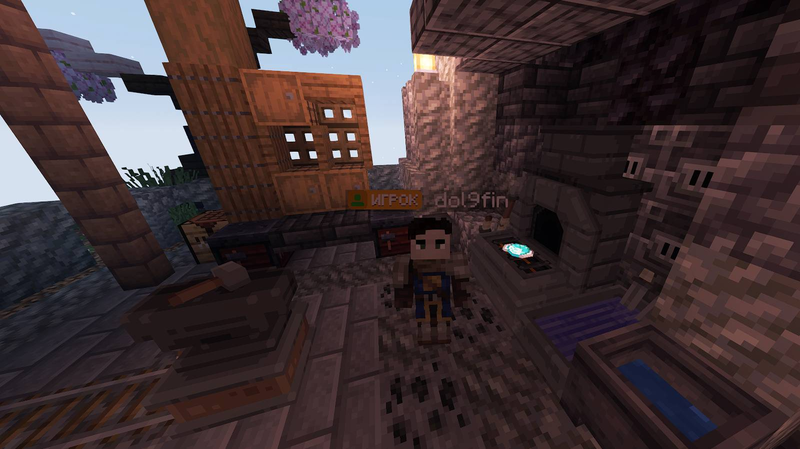

Гайды / Ремёсла
Кузнечное дело
Шесть сотен чертежей, 38 металлов и четыре станции. От ритма твоих ударов зависит, выйдет брак или шедевр. А в конце — карта, где добывать все 75 руд.

Главное
Обычный крафт оружия, брони и инструментов из железа и более прочных металлов отключён. Их делают только в кузне, проводя заготовку через четыре станции:
- Горн — нагреть металл.
- Наковальня — проковать молотом.
- Закалочная ванна — закалить в воде.
- Точильный круг — довести и собрать изделие.
Каждый этап — короткая мини-игра. Итоговое качество складывается из оценок: ковка весит 40%, остальные этапы — по 20%.
Справка — /smith, книга чертежей — /smith recipes, информация о заготовке в руке — /smith info.
Что нужно
Станции
| Станция | Мебель | Заменитель из ванили |
|---|---|---|
| Горн | Кузнечный горн | Доменная печь (с Shift) |
| Наковальня | Кузнечная наковальня | Обычная наковальня |
| Закалочная ванна | Ванна для закалки | Котёл с водой |
| Точильный круг | Точило | Точило |
Кузнечный молот
Без молота на наковальне не поработать. Он крафтится на обычном верстаке из трёх железных слитков и двух палок — рецепт покажет книга рецептов игры. Каждый удар тратит 1 прочность молота.
Топливо для горна
| Топливо | Сколько горит |
|---|---|
| Уголь, древесный уголь | 8 единиц |
| Стержень ифрита | 12 |
| Блок угля | 80 |
| Ведро лавы | 100 |
| Блок сушёной ламинарии | 3 |
Этап 1. Горн
- Положи топливо в горн и выбери чертёж в книге (
/smith recipes) — нужны слитки нужного металла. - На шкале жара есть рабочая зона — у каждого металла своя. Железо любит 60–80% жара, золото 45–66%, алмаз 70–88%.
- Жми мехи, чтобы раздуть огонь. Каждый качок поднимает жар, но потом он плавно спадает.
- Держи жар в зоне, пока заготовка не прогреется. Железо греется около 7 секунд, золото — 5, алмаз — 9.
- Перегрел — металл обгорает, качество падает. Недогрел — заготовка выйдет хуже.
Заготовка остывает сама. Не уходи далеко: холодный металл придётся греть снова, а повторный нагрев идёт вдвое хуже.
Этап 2. Наковальня
- Положи горячую заготовку на наковальню и возьми молот.
- По шкале бежит бегунок. Бей ЛКМ, когда он в центре.
- Оценка каждого удара: идеально (центр), хорошо, нормально или мимо.
- Каждый удар немного остужает металл. Когда заготовка остыла, бегунок ускоряется — бить становится труднее.
- Тяжёлые металлы куются медленнее: у алмаза бегунок в 1,25 раза быстрее, чем у железа, у золота — медленнее.
Ковка — самая важная часть: она даёт 40% итогового качества.
Этап 3. Закалка
- Опусти заготовку в закалочную ванну.
- Пойдёт пар, а шкала покажет, сколько тепла осталось.
- Вынимай, когда шкала в зелёном окне — примерно на середине. Окно каждый раз немного сдвигается.
- Вынул рано — металл мягкий, поздно — хрупкий.
Этап 4. Точило
- Подойди с заготовкой к точильному кругу.
- На экране по очереди появляются действия: ПКМ, ЛКМ, Shift или F.
- Успей нажать нужное, пока подсказка не исчезла.
- После последнего действия изделие собирается и попадает к тебе с оценкой качества.
Качество изделия
| Качество | Звёзды | Прочность | Урон и защита | Скорость копки |
|---|---|---|---|---|
| Брак | ★ | 70% | −10% | хуже |
| Грубая работа | ★★ | 85% | −4% | обычная |
| Добротная работа | ★★★ | 100% | обычные | обычная |
| Отличная работа | ★★★★ | 115% | +6% | +1 |
| Шедевр | ★★★★★ | 135% | +12% | +2 |
На изделии подписан мастер, который его выковал. О каждом шедевре узнаёт весь сервер.
Металлы
В кузне работают 38 металлов. Обычные: железо, золото, медь, олово, свинец, никель, серебро. Сплавы: сталь, электрум, розовое золото, монель, нитинол. Редкие: кобальт, хром, вольфрам, платина, титан, родий, осмий. Легендарные: адамантит, теневая сталь, небесная сталь, этерий, вулкагмий, кримсонит, нептуний, талассий, радий, торий.
У каждого металла своя рабочая зона жара, время нагрева и остывания и скорость ковки. Чем реже металл, тем у́же зона и капризнее ковка.
Радий, торий и нептуний радиоактивны. Перед работой с ними надень свинцовую броню.
Где добывать руду
Кроме обычных железа, золота и алмазов, в мире есть руды ещё 75 материалов — от олова и никеля до адамантита. Почти все они нужны в кузне.
Как читать таблицу
- Порода — во что вкраплена руда. Каменные руды лежат выше Y 0, глубинносланцевые — ниже Y 8.
- Высота Y — в каком диапазоне искать. Свою высоту видно по [F3].
- Жил на чанк × размер — сколько жил игра пытается поставить в один чанк и сколько блоков в каждой. Чем больше оба числа, тем чаще руда.
- Где — биомы. «Весь верхний мир» — любые биомы обычного мира, включая пещерные.
Новые руды есть только в новых чанках. Если вокруг дома всё изрыто, отправляйся в нехоженые земли.
Опасные руды
- Радий, радиевая пыль и торий радиоактивны. Они лежат только в вулканических биомах Terralith (Вулканический кратер и пики, Кальдера, Базальтовые утёсы, Йеллоустоун, Пепельная саванна) и в глубинных пещерах (Глубокая тьма, Глубокие, Мантийные, Термальные и Заражённые пещеры). Перед работой надень свинцовую броню.
- Пороховая руда может рвануть. Ищи её в пустынях, пустошах и вулканах.
- Бром токсичен, он есть только в Энде.
- Вулкагмий — в вулканических биомах Незера: Базальтовые и Вулканические дельты, Пепельные пустоши, Адские дюны, Токсичная свалка. Одна из его руд прячется прямо в магма-блоках.
Обычные руды
| Руда | Высота Y | Где больше всего |
|---|---|---|
| Уголь | 0…320 | Y 95 и в горах |
| Медь | −16…112 | Y 48, особенно в карстовых пещерах |
| Железо | −64…320 | Y 16 и в горах выше Y 80 |
| Золото | −64…32 | Y −16; в пустошах ещё и до Y 256 |
| Редстоун | −64…16 | Y −59 и ниже |
| Лазурит | −64…64 | Y 0 |
| Алмаз | −64…16 | Y −59 и ниже |
| Изумруд | −16…320 | Только в горах |
| Незер-кварц и золото Незера | 10…117 | Весь Незер |
| Древние обломки | 8…119 | Незер, больше всего на Y 15 |
Сталь в мире не добывается: её крафтят из двух железных слитков и угля.
Карта руд по материалам
Все 138 рудных жил сервера, сгруппированные по материалу.
| Материал | Порода | Высота Y | Жил на чанк × размер | Где |
|---|---|---|---|---|
| Адамантит | эндерняк | 0…180 | 10 × 8 | весь Энд |
| Аквамарин | камень | 0…220 | 3 × 4 | океаны |
| Аквамарин | глубинный сланец | -30…0 | 3 × 3 | океаны |
| Аметист | камень | 0…60 | 4 × 3 | весь верхний мир |
| Аметист | камень | 0…60 | 12 × 3 | аметистовые биомы, ×3 |
| Аметист | глубинный сланец | -55…-20 | 3 × 3 | весь верхний мир |
| Аметист | глубинный сланец | -55…-20 | 9 × 3 | аметистовые биомы, ×3 |
| Аметист | незерак | 20…80 | 4 × 4 | весь Незер |
| Аметрин | камень | 0…50 | 2 × 3 | весь верхний мир |
| Аметрин | камень | 0…50 | 6 × 3 | аметистовые биомы, ×3 |
| Аметрин | глубинный сланец | -50…-20 | 1 × 4 | весь верхний мир |
| Аметрин | глубинный сланец | -50…-20 | 3 × 4 | аметистовые биомы, ×3 |
| Белый опал | камень | 110…160 | 3 × 3 | весь верхний мир |
| Белый опал | глубинный сланец | -50…-10 | 2 × 3 | весь верхний мир |
| Бром | эндерняк | 0…180 | 4 × 8 | весь Энд |
| Вольфрам | камень | 0…60 | 1 × 3 | весь верхний мир |
| Вольфрам | глубинный сланец | -64…-20 | 1 × 6 | весь верхний мир |
| Вулкагмий | незерак | 1…60 | 2 × 3 | вулканические биомы Незера |
| Вулкагмий | магма-блок | 1…126 | 4 × 4 | вулканические биомы Незера |
| Гелиодор | камень | 0…30 | 2 × 3 | весь верхний мир |
| Гелиодор | глубинный сланец | -62…-40 | 3 × 3 | весь верхний мир |
| Индий | камень | 0…60 | 1 × 6 | весь верхний мир |
| Индий | глубинный сланец | -20…8 | 1 × 3 | весь верхний мир |
| Кобальт | камень | 0…45 | 1 × 4 | весь верхний мир |
| Кобальт | глубинный сланец | -64…4 | 1 × 4 | весь верхний мир |
| Кримзонит | камень | 20…40 | 1 × 3 | весь верхний мир |
| Кримзонит | глубинный сланец | -64…-45 | 1 × 3 | весь верхний мир |
| Кримзонит | незерак | 1…126 | 8 × 8 | Пустоши Незера, багровый лес, Плачущая долина, Токсичная свалка |
| Кристалл | камень | 0…32 | 4 × 4 | весь верхний мир |
| Кристалл | глубинный сланец | -50…-30 | 3 × 5 | весь верхний мир |
| Лейкосапфир | камень | 0…30 | 1 × 3 | весь верхний мир |
| Лейкосапфир | глубинный сланец | -60…-20 | 2 × 3 | весь верхний мир |
| Лемонит | камень | 0…65 | 3 × 3 | весь верхний мир |
| Лемонит | глубинный сланец | -35…0 | 3 × 4 | весь верхний мир |
| Магний | камень | 0…80 | 2 × 5 | весь верхний мир |
| Магний | глубинный сланец | -30…0 | 2 × 6 | весь верхний мир |
| Мистический кварц | камень | 0…20 | 2 × 3 | весь верхний мир |
| Мистический кварц | глубинный сланец | -30…0 | 2 × 3 | весь верхний мир |
| Монель | камень | 0…58 | 2 × 4 | весь верхний мир |
| Монель | глубинный сланец | -40…0 | 2 × 3 | весь верхний мир |
| Морозный опал | камень | 0…260 | 2 × 6 | холодные и снежные биомы |
| Нептуний | камень | 0…36 | 1 × 4 | океаны |
| Нептуний | глубинный сланец | -64…-36 | 1 × 4 | океаны |
| Нефрит | камень | 0…60 | 2 × 3 | весь верхний мир |
| Нефрит | глубинный сланец | -30…-10 | 3 × 3 | весь верхний мир |
| Никель | камень | 10…70 | 2 × 6 | весь верхний мир |
| Никель | глубинный сланец | -60…-10 | 2 × 8 | весь верхний мир |
| Огненный опал | незерак | 4…126 | 8 × 4 | весь Незер |
| Олово | камень | 0…124 | 2 × 6 | весь верхний мир |
| Олово | глубинный сланец | -20…0 | 1 × 5 | весь верхний мир |
| Опаловый кварц | камень | 80…170 | 3 × 3 | весь верхний мир |
| Опаловый кварц | глубинный сланец | -60…-5 | 2 × 3 | весь верхний мир |
| Опаловый кварц | незерак | 30…115 | 7 × 5 | весь Незер |
| Опаловый кварц | незерак | 30…115 | 14 × 5 | Кварцевые равнины, ещё ×2 |
| Осмий | камень | 0…40 | 1 × 3 | весь верхний мир |
| Осмий | глубинный сланец | -64…-50 | 1 × 3 | весь верхний мир |
| Осмий | незерак | 1…100 | 2 × 6 | весь Незер |
| Падпараджа | камень | 0…20 | 2 × 3 | весь верхний мир |
| Падпараджа | глубинный сланец | -64…-38 | 3 × 4 | весь верхний мир |
| Перидот | камень | 10…50 | 2 × 3 | весь верхний мир |
| Перидот | глубинный сланец | -35…-10 | 3 × 3 | весь верхний мир |
| Платина | камень | 0…65 | 3 × 3 | весь верхний мир |
| Платина | глубинный сланец | -40…0 | 3 × 4 | весь верхний мир |
| Порох | камень | 0…64 | 2 × 10 | пустыни, пустоши и вулканы |
| Порох | глубинный сланец | -50…0 | 4 × 6 | пустыни, пустоши и вулканы |
| Радиевая пыль | камень | 0…40 | 2 × 3 | вулканы Terralith и глубинные пещеры |
| Радиевая пыль | глубинный сланец | -64…-20 | 2 × 3 | вулканы Terralith и глубинные пещеры |
| Радий-226 | камень | 0…20 | 2 × 3 | вулканы Terralith и глубинные пещеры |
| Радий-226 | глубинный сланец | -64…-40 | 2 × 3 | вулканы Terralith и глубинные пещеры |
| Редкий сапфир | камень | 0…32 | 1 × 3 | весь верхний мир |
| Редкий сапфир | глубинный сланец | -64…-40 | 1 × 3 | весь верхний мир |
| Родий | камень | 0…160 | 3 × 6 | холодные и снежные биомы |
| Родий | глубинный сланец | -64…0 | 3 × 4 | холодные и снежные биомы |
| Розовое золото | камень | 0…25 | 1 × 4 | весь верхний мир |
| Розовое золото | глубинный сланец | -64…0 | 1 × 5 | весь верхний мир |
| Розовое золото | незерак | 10…100 | 4 × 8 | весь Незер |
| Розовый опал | камень | 110…160 | 3 × 3 | весь верхний мир |
| Розовый опал | глубинный сланец | -50…-10 | 2 × 3 | весь верхний мир |
| Рубин | камень | 0…36 | 1 × 4 | весь верхний мир |
| Рубин | глубинный сланец | -60…-40 | 1 × 4 | весь верхний мир |
| Сапфир | камень | 0…20 | 1 × 4 | весь верхний мир |
| Сапфир | глубинный сланец | -60…-20 | 1 × 4 | весь верхний мир |
| Свинец | камень | 0…80 | 1 × 8 | весь верхний мир |
| Свинец | глубинный сланец | -20…8 | 2 × 3 | весь верхний мир |
| Сердолик | камень | 0…300 | 4 × 4 | весь верхний мир |
| Сердолик | глубинный сланец | -30…-20 | 10 × 1 | весь верхний мир |
| Серебро | камень | 10…44 | 2 × 4 | весь верхний мир |
| Серебро | глубинный сланец | -40…0 | 2 × 4 | весь верхний мир |
| Серебро | незерак | 5…117 | 4 × 8 | весь Незер |
| Серый опал | камень | 110…160 | 3 × 3 | весь верхний мир |
| Серый опал | глубинный сланец | -50…-10 | 2 × 3 | весь верхний мир |
| Солнечный камень | камень | 0…82 | 4 × 4 | пустыни и пустоши |
| Солнечный камень | глубинный сланец | -64…0 | 8 × 3 | пустыни и пустоши |
| Сурьма | камень | 0…100 | 2 × 6 | весь верхний мир |
| Сурьма | глубинный сланец | -40…0 | 3 × 3 | весь верхний мир |
| Талассий | камень | 0…70 | 2 × 3 | океаны |
| Талассий | глина | -60…120 | 12 × 12 | весь верхний мир |
| Талассий | глубинный сланец | -50…0 | 3 × 3 | океаны |
| Танзанит | камень | 30…48 | 2 × 3 | весь верхний мир |
| Танзанит | глубинный сланец | -30…0 | 3 × 3 | весь верхний мир |
| Теневит | камень | 0…40 | 1 × 1 | весь верхний мир |
| Теневит | глубинный сланец | -64…-20 | 3 × 4 | весь верхний мир |
| Теневит | эндерняк | 0…200 | 5 × 5 | весь Энд |
| Теневит | эндерняк | 0…200 | 10 × 5 | Теневые земли Энда, ещё ×2 |
| Титан | камень | 20…100 | 2 × 5 | весь верхний мир |
| Титан | глубинный сланец | -50…-20 | 2 × 6 | весь верхний мир |
| Титан | незерак | 1…100 | 6 × 6 | весь Незер |
| Титановый кварц | незерак | 40…126 | 7 × 3 | весь Незер |
| Титановый кварц | незерак | 40…126 | 14 × 3 | Кварцевые равнины, ещё ×2 |
| Топаз | камень | 80…160 | 3 × 3 | весь верхний мир |
| Топаз | глубинный сланец | -64…0 | 2 × 3 | весь верхний мир |
| Торий | камень | 0…170 | 2 × 4 | вулканы Terralith и глубинные пещеры |
| Торий | глубинный сланец | -60…-20 | 2 × 4 | вулканы Terralith и глубинные пещеры |
| Уссингит | камень | 100…200 | 3 × 3 | весь верхний мир |
| Уссингит | глубинный сланец | -64…-40 | 5 × 3 | весь верхний мир |
| Флюорит I | камень | 0…50 | 3 × 4 | весь верхний мир |
| Флюорит I | глубинный сланец | -50…0 | 3 × 4 | весь верхний мир |
| Флюорит II | камень | 0…50 | 3 × 3 | весь верхний мир |
| Флюорит II | глубинный сланец | -50…0 | 3 × 3 | весь верхний мир |
| Флюорит III | камень | 0…50 | 2 × 3 | весь верхний мир |
| Флюорит III | глубинный сланец | -50…0 | 2 × 3 | весь верхний мир |
| Хлорофан | камень | 0…60 | 3 × 3 | весь верхний мир |
| Хлорофан | глубинный сланец | -64…0 | 4 × 4 | весь верхний мир |
| Хондрит | камень | 0…120 | 4 × 5 | весь верхний мир |
| Хондрит | глубинный сланец | -30…0 | 2 × 5 | весь верхний мир |
| Хром | камень | 0…30 | 1 × 3 | весь верхний мир |
| Хром | глубинный сланец | -64…0 | 1 × 3 | весь верхний мир |
| Цитрин | камень | 4…64 | 3 × 3 | весь верхний мир |
| Цитрин | глубинный сланец | -55…-15 | 3 × 3 | весь верхний мир |
| Чёрный опал | камень | 110…160 | 3 × 3 | весь верхний мир |
| Чёрный опал | глубинный сланец | -50…-10 | 2 × 3 | весь верхний мир |
| Эканит | камень | 0…28 | 1 × 3 | весь верхний мир |
| Эканит | глубинный сланец | -60…-20 | 1 × 4 | весь верхний мир |
| Электрум | камень | 0…60 | 2 × 4 | весь верхний мир |
| Электрум | глубинный сланец | -64…0 | 2 × 3 | весь верхний мир |
| Электрум | незерак | 15…110 | 10 × 4 | весь Незер |
| Этериум | камень | 0…300 | 2 × 6 | весь верхний мир |
| Этериум | глубинный сланец | -60…0 | 1 × 3 | весь верхний мир |
Команды
/smith | справка |
/smith recipes | книга чертежей |
/smith info | о заготовке в руке |